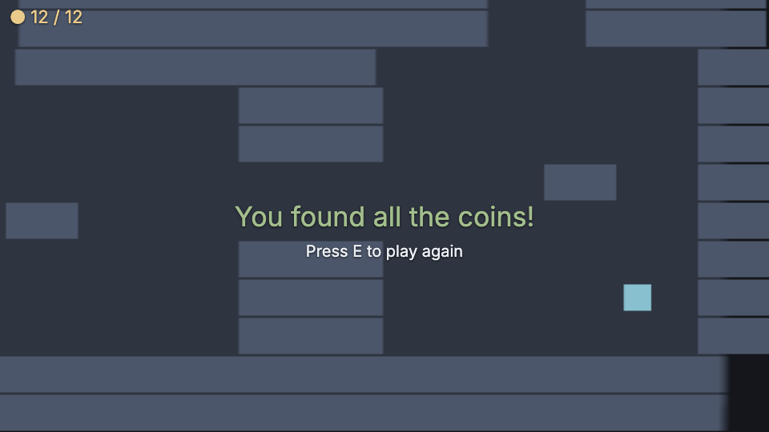
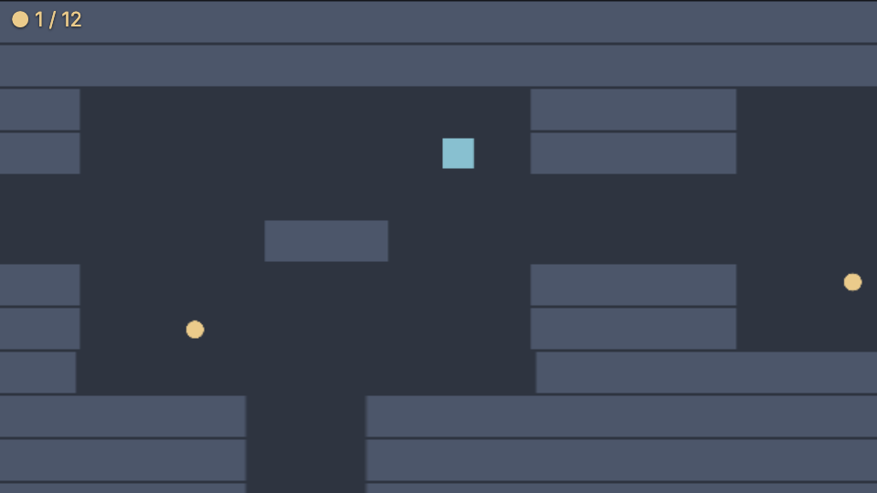

52 · Dungeon 4: Coins and score
Part 4 of the Unity-style dungeon series, continuing from part 3, camera and a bigger level. Allow 40 minutes.
What you will build: twelve coins hidden in the dungeon, a counter on the screen and a "You found all the coins!" message with Press E to play again.

Download: Part 4 project, also in examples/series-dungeon/part4.
1 Coins in the map#
Add the letter o to map.js wherever a coin should lie (the download has twelve):
File: scripts/map.js (replace the whole file from part 3)
export const MAP = [
'########################################',
'########################################',
'##........####..........#####.........##',
'##........####........o.#####......o..##',
'##...............................##...##',
'##....##..........###.................##',
'##......o.####..........#####..o......##',
'##........####..o.......#####.........##',
'#####..#######..........#########..#####',
'#####..###########..#############..#####',
'#####..###########..#############..#####',
'#####..###########..#############..#####',
'##..........######..##########........##',
'##........o.####..........####.o......##',
'##.o........####........o.####........##',
'##....##..........................##..##',
'##..................##................##',
'##..........####..........####........##',
'##..o.......####.o........####......o.##',
'##..........####..........####........##',
'########################################',
'########################################',
];2 Triggers and the Coin prefab#
A trigger is a collider that does not block anything but tells you when something enters. Make the coin prefab in the editor:
- Hierarchy ▸ + Create ▸ Sprite, rename it
Coin. In the sprite set textureassets/sprites/circle.png(pick it from the list), size14, 14, tint#ebcb8b. Add the tagCoin. - Inspector ▸ + Add component ▸ rigidbody, mode
static. - Inspector ▸ + Add component ▸ collider, shape
box, size16, 16, and tick trigger. - Write the script below, then Inspector ▸ + Add script ▸ scripts/coin.js.
- right-click
Coin▸ Create prefab, then deleteCoinfrom the scene.
In the file prefabs/coin.prefab.json:
{ "format": 1, "root": { "name": "Coin", "tags": ["Coin"],
"components": [
{ "type": "sprite", "texture": "assets/sprites/circle.png", "size": [14, 14], "tint": "#ebcb8b", "alpha": 1 },
{ "type": "rigidbody", "mode": "static" },
{ "type": "collider", "shape": "box", "size": [16, 16], "trigger": true } ],
"scripts": [ { "path": "scripts/coin.js", "attributes": {} } ] } }The script:
File: scripts/coin.js (new file, the whole file; attach it to the coin prefab)
import { MonoBehaviour, GameManager, Destroy, Random, Time, Vector3 } from 'nord';
export default class Coin extends MonoBehaviour {
Start() {
this.y0 = this.position.y;
this.t = Random.value * 6; // every coin bobs out of step with the others
this.taken = false;
}
Update() {
this.t += Time.deltaTime;
const p = this.position;
this.position = new Vector3(p.x, this.y0 + Math.sin(this.t * 4) * 2, p.z);
}
OnTriggerEnter(other) { // Unity: OnTriggerEnter2D(Collider2D other)
if (this.taken || !other.hasTag('Hero')) return; // other.CompareTag("Hero")
this.taken = true; // Destroy() happens at the end of the frame
GameManager.instance.AddScore(1);
Destroy(this.entity);
}
}In the editor: select the coin prefab, then Inspector ▸ + Add script ▸ scripts/coin.js. Prefabs: first Assets ▸ right-click the prefab ▸ Open prefab. The scene or prefab file then lists the script under "scripts".
OnTriggerEnter(other)isOnTriggerEnter2D(Collider2D other).otheris the entity that came in;other.hasTag('Hero')isother.CompareTag("Hero").GameManager.instance.AddScore(1): see next section.Destroy(this.entity)removes the coin at the end of the frame;takenstops a second overlap in the same frame from counting twice.Random.value * 6starts each coin's bobbing at a different time, so they do not move in lockstep. (Random.Range(0, 6)with two whole numbers would be an integer, like C#.)
3 The GameManager#
Nord has the Unity singleton you always write by hand. Create scripts/GameManager.js:
File: scripts/GameManager.js (new file, the whole file; attach it to the GameManager object)
import { GameManager } from 'nord';
// The engine's GameManager (score, lives, state, Restart) as a script you can attach to an object.
export default class Manager extends GameManager {}In the editor: select the GameManager object, then Inspector ▸ + Add script ▸ scripts/GameManager.js. If the object does not exist yet, create it first with Hierarchy ▸ + Create ▸ Empty and rename it. The scene or prefab file then lists the script under "scripts".
Add an empty entity GameManager with that script. It keeps score, lives and state, offers AddScore, LoseLife, SetState, Restart, and announces changes on the global bus: score, lives, state, gameover. Anywhere in your code: GameManager.instance.AddScore(1). (More in GameManager and Singletons.)
Why does the coin not draw the score itself? It does not know that a HUD exists. It only says "+1" to the manager; the manager shouts "score changed"; whoever is interested (the HUD, a sound, an achievement) subscribes. Add features later without opening old files.
4 Spawning the coins#
level.js grows by two lines (the rest is part 3). The loop counts the coins and creates them from the prefab:
else if (ch === 'o') { coins++; await Instantiate('prefabs/coin.prefab.json', { pos: [x, y, 1] }); }and the announcement carries the total: EventBus.Publish('level', { width, height, coins });. The complete file is in the download.
5 The HUD#
A HUD is a screen layer of HTML elements. this.ui.label(text, options) makes a label; screen: 'hud' puts it on the always-visible layer; x/y are pixels from the top-left; anchor: 'c' centres a label and x/y become offsets from the centre. Create an empty entity Hud with:
File: scripts/hud.js (new file, the whole file; attach it to the Hud object)
import { MonoBehaviour, GameManager, EventBus, UnityInput as Input, KeyCode } from 'nord';
export default class Hud extends MonoBehaviour {
Start() {
this.total = 0;
this.score = this.ui.label('', { screen: 'hud', x: 12, y: 8, size: 22, color: '#ebcb8b' });
this.offs = [
EventBus.Subscribe('level', ({ coins }) => { this.total = coins; this.Refresh(); }),
EventBus.Subscribe('score', () => this.Refresh()),
];
this.Refresh();
}
Refresh() {
const gm = GameManager.instance;
this.score.set(`● ${gm.score} / ${this.total}`);
if (this.total > 0 && gm.score === this.total && gm.state === 'playing') this.Win();
}
Win() {
GameManager.instance.SetState('won');
this.ui.label('You found all the coins!', { screen: 'hud', anchor: 'c', size: 34, color: '#a3be8c' });
this.ui.label('Press E to play again', { screen: 'hud', anchor: 'c', y: 44, size: 20 });
}
Update() {
if (GameManager.instance.state === 'won' && Input.GetKeyDown(KeyCode.E)) GameManager.instance.Restart();
}
OnDestroy() { this.score?.remove(); this.offs?.forEach((off) => off()); }
}In the editor: select the Hud object, then Inspector ▸ + Add script ▸ scripts/hud.js. If the object does not exist yet, create it first with Hierarchy ▸ + Create ▸ Empty and rename it. The scene or prefab file then lists the script under "scripts".
- The HUD subscribes to
level(the total) andscore.EventBus.Subscribereturns an unsubscribe function;OnDestroycalls them all and removes the label. When you restart, scripts are destroyed and recreated; a script that forgets this leaves a ghost label and a ghost listener. Win()sets the manager's state towonand shows two labels.Input.GetKeyDown(KeyCode.E)is true for exactly one frame;GameManager.instance.Restart()resets score and lives and reloads the scene: all coins return.
Press Play: the counter increases as coins vanish. Take the last one and the message appears. Press E: the level resets.

6 Check yourself#
- The counter starts at
● 0 / 12. The total comes from the level: add a coin to the map and it says 13. - Walk through a coin diagonally past a wall corner: it still counts.
- Restart five times: no errors in the Console, no doubled labels.
If the counter shows 0 / 0, the HUD missed the level event: check that Level is above Hud in the Hierarchy.
What you learned#
- Triggers:
OnTriggerEnter, tags,CompareTag. - The built-in
GameManagersingleton and its events. EventBuskeeps scripts independent.this.uimakes HUD labels; always remove them inOnDestroy.
Next: Part 5, enemies and health.